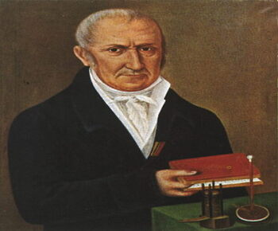

| |
ELETTRICITÀ
CHE COS'E ?
L'elettricità è una forma di energia associata al movimento degli elettroni all'interno di un conduttore. Gli elettroni sono particelle cariche di carica negativa e sono una componente fondamentale degli atomi. L'elettricità può manifestarsi in diverse forme, tra cui corrente elettrica, cariche elettriche statiche, campi elettrici e magnetici.
L'unità di misura dell'elettricità è il coulomb, e il flusso di elettroni attraverso un conduttore è misurato in ampere. La tensione, misurata in volt, rappresenta la differenza di potenziale elettrico che spinge gli elettroni attraverso un circuito.
L'elettricità è una delle forze fondamentali della natura ed è essenziale per molte applicazioni nella vita di tutti i giorni, come l'illuminazione, il funzionamento di elettrodomestici, la produzione di energia elettrica e molto altro. La sua scoperta e comprensione hanno portato a sviluppi significativi nella scienza e nella tecnologia.
COME FUNZIONA ?
Il funzionamento dell'elettricità è basato sul comportamento degli elettroni, che sono particelle cariche di carica negativa che orbitano intorno al nucleo degli atomi. Alcuni concetti fondamentali per comprendere il funzionamento dell'elettricità includono tensione, corrente elettrica e resistenza.
Tensione (Voltaggio): La tensione è la differenza di potenziale elettrico tra due punti e misurata in volt (V). Questa differenza di potenziale crea una forza che spinge gli elettroni lungo un conduttore. Un esempio comune di tensione è la differenza di potenziale tra i poli di una batteria.
Corrente Elettrica: La corrente elettrica è il flusso di elettroni attraverso un conduttore, come un filo metallico. La corrente è misurata in ampere (A). La corrente fluisce quando c'è una differenza di potenziale (tensione) tra i due estremi di un conduttore.
Resistenza: La resistenza, misurata in ohm (Ω), è la capacità di un materiale di opporsi al flusso di corrente. Materiali come i metalli tipicamente hanno bassa resistenza, consentendo un facile passaggio di corrente, mentre materiali come il legno o la gomma hanno resistenza più alta.
Il movimento degli elettroni in un circuito genera energia, che può essere sfruttata per alimentare dispositivi elettrici. Un circuito elettrico chiuso consente il flusso continuo di corrente, mentre un circuito aperto interrompe il flusso. I componenti elettrici, come resistenze, condensatori e induttori, sono utilizzati per manipolare e controllare il flusso di corrente in un circuito.
In breve, l'elettricità si basa sulla presenza e sul movimento degli elettroni in un conduttore, sfruttando la differenza di potenziale elettrico per generare corrente elettrica.
ESEMPI NELLA STORIA:
La storia dell'elettricità è ricca di importanti scoperte e sviluppi che hanno contribuito in modo significativo alla comprensione e all'applicazione di questa forma di energia. Ecco alcuni esempi chiave nella storia dell'elettricità:
Esperimenti di Amber (Thales di Mileto, circa 600 a.C.): Thales di Mileto, un antico filosofo greco, osservò che strofinando l'ambra con un panno, la sostanza attirava piccoli oggetti leggeri. Questo è uno degli esempi iniziali di cariche elettriche statiche.
Leyden Jar (Pieter van Musschenbroek, 1745): Il Leyden Jar è uno dei primi condensatori, dispositivi capaci di immagazzinare carica elettrica. Pieter van Musschenbroek fu uno dei primi a descrivere questo dispositivo, che contribuì allo sviluppo dei primi accumulatori di energia elettrica.
Esperimenti di Franklin (Benjamin Franklin, 18° secolo): Benjamin Franklin svolse una serie di esperimenti sull'elettricità e propose il modello della "teoria del fluido elettrico", identificando le cariche positive e negative. La sua famosa espressione "elettricità positiva" e "elettricità negativa" è ancora in uso.
Batteria di Volta (Alessandro Volta, 1800): Alessandro Volta inventò la pila voltaica, una delle prime batterie, che generava corrente elettrica mediante reazioni chimiche. Questa invenzione segnò l'inizio dell'era delle batterie elettriche portatili.
Teoria dell'elettromagnetismo (Hans Christian Ørsted e André-Marie Ampère, inizio del XIX secolo): Ørsted dimostrò che una corrente elettrica può influenzare una bussola, indicando la relazione tra elettricità e magnetismo. Ampère sviluppò le leggi matematiche che descrivono il comportamento delle correnti elettriche e dei campi magnetici.
Generatore elettrico (Michael Faraday, 1831): Michael Faraday scoprì il principio dell'induzione elettromagnetica, dimostrando che un campo magnetico variabile può generare una corrente elettrica. Questo principio è alla base dei generatori elettrici moderni.
Lampadina elettrica (Thomas Edison, 1879): Thomas Edison sviluppò la lampadina elettrica a incandescenza, rivoluzionando l'illuminazione elettrica e portando all'adozione su larga scala dell'elettricità per l'illuminazione.
Questi sono solo alcuni esempi chiave, ma la storia dell'elettricità è piena di contributi da parte di numerosi scienziati e inventori che hanno contribuito a plasmare il nostro modo di utilizzare e comprendere questa forma di energia.
VOLTA
CHI ERA
Alessandro Volta (1745-1827) era un fisico italiano famoso per le sue contribuzioni nel campo dell'elettricità e del magnetismo. È noto soprattutto per l'invenzione della pila voltaica, comunemente chiamata "pila". Nel 1800, Volta presentò la sua invenzione, che consisteva in una serie di dischi di zinco e rame separati da strati di carta imbevuti di soluzione salina o acido. Questa pila riusciva a produrre una corrente elettrica continua, dimostrando che l'elettricità poteva essere generata chimicamente.
L'unità di misura della differenza di potenziale elettrico, il "volt," è stata poi dedicata in onore di Alessandro Volta. La sua pila ha svolto un ruolo fondamentale nello sviluppo delle batterie elettriche e ha contribuito notevolmente alla comprensione e all'applicazione dell'elettricità nell'era moderna.
COSA HA FATTO
Alessandro Volta, un fisico italiano, è famoso per l'invenzione della pila voltaica, o semplicemente "pila", nel 1800. La pila voltaica è considerata uno dei primi dispositivi in grado di generare corrente elettrica mediante reazioni chimiche. Questa invenzione è stata fondamentale per lo sviluppo della tecnologia delle batterie.
La pila voltaica di Volta era costituita da una serie di dischi di zinco e rame, separati da strati di carta imbevuti di soluzione salina o acido. L'interazione chimica tra i metalli e la soluzione elettrolitica generava una differenza di potenziale elettrico, producendo così una corrente elettrica continua.
L'invenzione della pila di Volta ha dimostrato che l'elettricità poteva essere generata chimicamente e ha aperto la strada a nuove scoperte e sviluppi nell'ambito dell'elettricità e delle sue applicazioni pratiche. L'unità di misura della differenza di potenziale elettrico, il "volt," è stata successivamente dedicata in onore di Alessandro Volta. La sua ricerca e le sue invenzioni hanno contribuito in modo significativo allo sviluppo della scienza e della tecnologia elettrica.
LA VITA
Alessandro Volta è nato il 18 febbraio 1745 a Como, nel Ducato di Milano, che faceva parte del Regno di Lombardia sotto l'Impero austriaco. Volta proveniva da una famiglia benestante e ricevette una buona educazione iniziale. Mostrò un precoce interesse per la scienza e la fisica, e presto cominciò a studiare elettrostatica e magnetismo.
Nel 1774, Volta fu nominato professore di fisica sperimentale al liceo di Como, e nel 1775 divenne professore di fisica all'Università di Pavia, dove insegnò per molti anni. Durante questo periodo, condusse vari esperimenti sulla produzione di elettricità e fece importanti scoperte nel campo dell'elettrostatica.
La sua invenzione più celebre fu la pila voltaica, che presentò nel 1800. Questa pila era composta da strati alternati di zinco e rame separati da dischi di cartone imbevuti di soluzione salina o acido. La pila voltaica riusciva a generare una corrente elettrica continua, dimostrando che l'elettricità poteva essere prodotta chimicamente.
Alessandro Volta ricevette numerosi onori per le sue scoperte e la sua carriera scientifica. Nel 1801, Napoleone Bonaparte lo accolse a Parigi e gli conferì la Legion d'Onore. Nel 1810, fu nominato senatore del Regno d'Italia, parte dell'Impero napoleonico.
Dopo la caduta di Napoleone, Volta trascorse gli ultimi anni della sua vita a Como, dove morì il 5 marzo 1827. La sua eredità è commemorata nell'unità di misura della differenza di potenziale elettrico, chiamata "volt" in suo onore. La figura di Alessandro Volta è considerata uno dei pionieri dell'elettricità e delle scienze elettriche.
 Immagine di Alessandro Volta  Immagine della Pila Di Volta |
 |